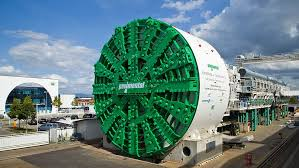
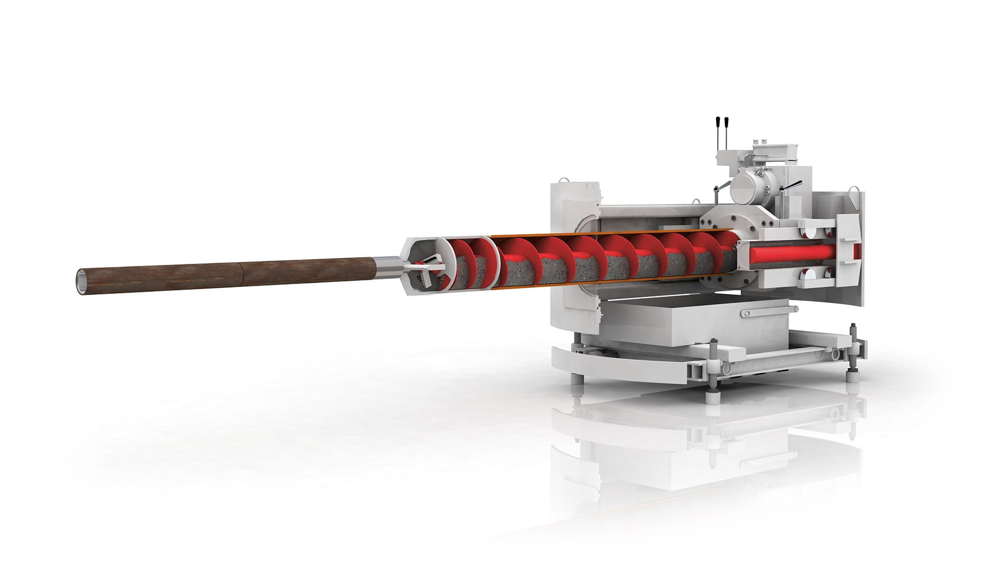

Herrenknecht AG
Weltmarktführer im Tunnelbau
Hidden Champion aus Baden-Württemberg: Die Herrenknecht AG ist Weltmarktführer bei Tunnelbohrmaschinen und prägt täglich das Leben von Millionen Menschen – oft unbemerkt im Untergrund unserer Städte.

Tunnelbohrmaschinen
Weltweite Nummer 1 bei Tunnelbohrmaschinen für alle Gesteinsarten und Durchmesser. Von U-Bahnen in Großstädten bis zu Alpentunneln.
Marktanteil weltweit~60%
Größte TBM19,25m Ø
Projekte weltweit5000+

Rohrvortrieb
Führender Anbieter für grabenlose Verlegung von Rohren und Leitungen. Schont Umwelt und minimiert Verkehrsbeeinträchtigungen.
MarktpositionMarktführer
Rohrdurchmesser0,1 - 4,5m
AnwendungVer-/Entsorgung

Geothermie
Innovative Bohrtechnik für nachhaltige Energiegewinnung aus der Tiefe der Erde. Schlüsseltechnologie für die Energiewende.
Bohrtiefebis 7000m
Temperaturbis 200°C
MarkttrendStark wachsend
Unternehmensgröße & Erfolg
Als Hidden Champion mit Sitz in Schwanau, Baden-Württemberg, ist Herrenknecht in über 80 Ländern aktiv und hat die moderne Tunnelbautechnologie revolutioniert.
5000+
Mitarbeiter weltweit
80+
Länder mit Projekten
1,14
Milliarden € Umsatz
137
Auszubildende
Innovationen & Systeme
Innovation und Ingenieurskunst "Made in Germany" - Herrenknecht entwickelt und produziert die fortschrittlichsten Tunnelbohrmaschinen der Welt.
Erddruckschilde (EPB)
Mixschilde
Hartgesteinsmaschinen
Mikrotunnel-Systeme
Directed Drilling
Utility Tunneling
Shaft Sinking
Geothermal Drilling
Meilensteine von Herrenknecht
1975
Gründung durch Martin Herrenknecht in Schwanau. Ingenieurbüro mit 6 Mitarbeitern, Ziel: Tunnelmaschinen entwickeln.
1977
Erste Erfolge: Herrenknecht GmbH entsteht, Maschinen für Rohrvortrieb überzeugen Kunden.
1982
Maschinen für Festgestein ermöglichen Tunnelbau in Bergen.
1984
Gründung von Herrenknecht International Ltd. in England – erster Schritt ins Ausland.
1988
Umwandlung in Herrenknecht AG; Weltrekord mit 14,2-Meter-Mixschild im Hamburger Elbtunnel.
1990er
Große Projekte: Gotthard-Basistunnel (57 km), Tunnelbau unter dem Jangtse-Fluss, Aktiengesellschaft bleibt in Familienhand.
2006-2010
Globaler Erfolg: 5.000+ Mitarbeiter, 70 Standorte, Umsatz >1,14 Mrd. €, Tochterfirma Euroform, Maschinen für alle Rohrgrößen.
2009
Fertigstellung Gotthard-Tunnel – 6 Monate vor Plan dank Herrenknecht-Technologie.
2010
Weltrekord-Bohrmaschine (15,43 m Durchmesser) für Shanghai-Tunnel. Neue Sparte: Geothermie-Maschinen.
2015
Übergabe an Familienstiftung zur Sicherung der Unabhängigkeit.
2022
Martin-Devid Herrenknecht tritt in Vorstand ein. Feier zum 80. Geburtstag von Martin Herrenknecht mit 2.000 Gästen. Projekte: Geothermie, klimafreundliche Tunnel.
2025
Weltmarktführer bei Tunnelbohrmaschinen (TBMs). 137 Auszubildende in Schwanau. Fokus auf Nachhaltigkeit. Hidden Champion: Wenig bekannt, prägt den Alltag.